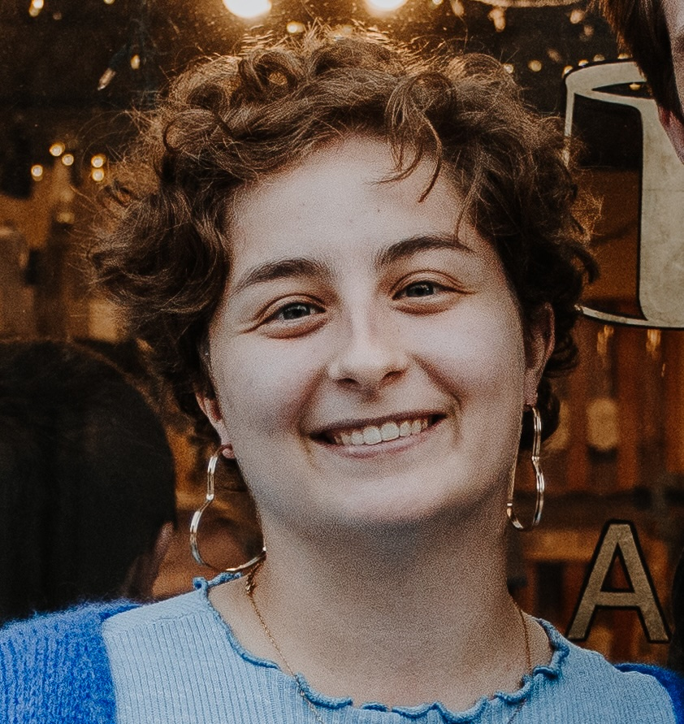

PhD Student
Northeastern Univeristy | Cybersecurity & Privacy Lab
About Me
I am a PhD student in Cybersecurity at Northeastern University, advised by Dr. Alan Mislove. My research spans several critical areas in the intersection of technology and society, with a focus on understanding the societal implications of algorithms and privacy concerns that arise with the continued integration of technology into society. I'm particularly interested in developing methods to analyze and audit algorithms and everyday technologies, ensuring they are fair, transparent, and accountable. My end goal in pursuing research is exploring strategies for creating and maintaining policies and frameworks that balance innovation with ethical considerations and societal well-being.
News
Paper accepted to [Conference/Journal Name]!
Presented my work at [Conference Name] in [Location].
Started as a research intern at [Organization].
Awarded [Fellowship/Grant Name] for my research on [topic].
Contact
Email: gerzon.n@northeastern.edu
Links: Google Scholar | GitHub | LinkedIn